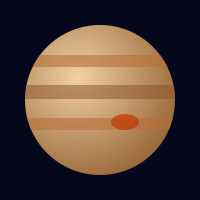

Galéria
Zem

Zem je jediná známa planéta, na ktorej existuje život. Asi 71 % jej povrchu pokrýva voda. Obieha Slnko za 365 dní a okolo svojej osi sa otočí približne za 24 hodín.
Mars

Mars má načervenalý povrch vďaka oxidu železitému. Na planéte sa nachádza Olympus Mons, najvyššia známa sopka v Slnečnej sústave.
Jupiter

Jupiter je najväčšia planéta Slnečnej sústavy. Jeho slávna Veľká červená škvrna je obrovská búrka, ktorá trvá už stáročia.